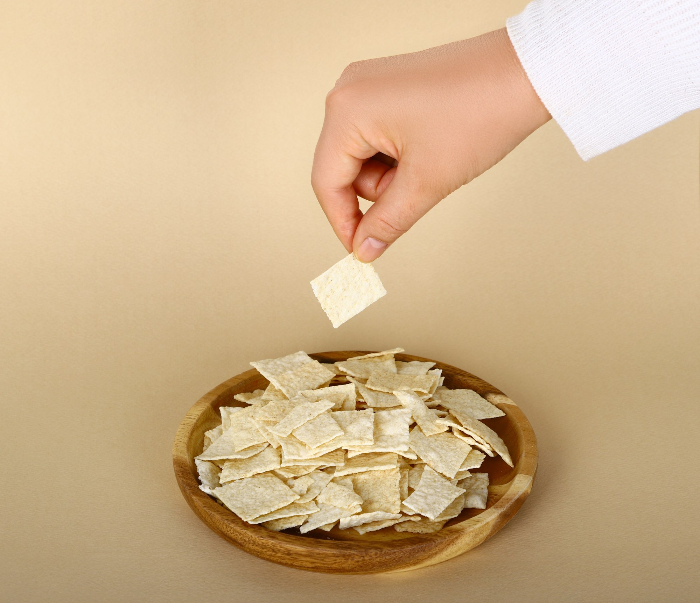
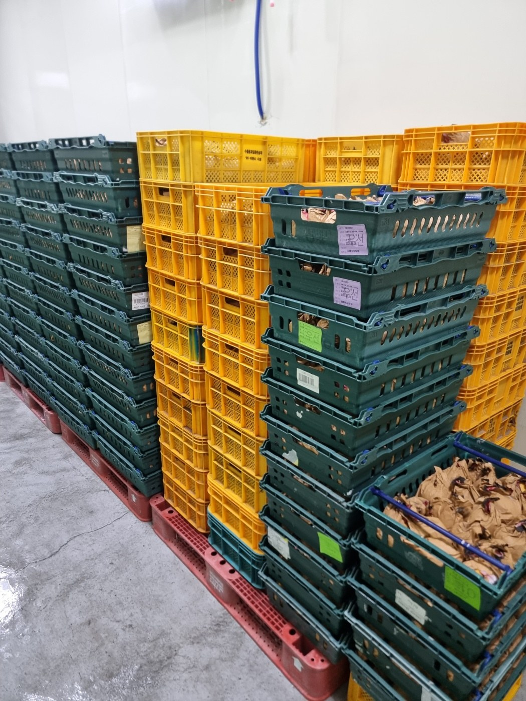

재배 · 식품 · 바이오 연구
농업에 뿌리를 두고,
블루베리 재배 현장 · 전남 화순
농업에 뿌리를 두고,
연구로 성장합니다.
과일 농장부터 버섯 재배와 식품 개발까지,
농업의 경험을 식품의 새로운 가능성으로 연결합니다.
2008년부터
농업에서 시작한 기업
518㎡
HACCP 가공공장
1,504㎡
버섯 재배 시설
986㎡
대전 물류센터
사업 분야
농업이라는 하나의 기반,
농업이라는 하나의 기반,
연결되는 세 가지 사업.
과일과 버섯을 기르고, 농산물을 식품으로 가공하며, 버섯 기반 식품 소재를 연구합니다.


수출 주력 제품
과일을 새로운 형태로.
동결건조 과일칩은 블루베리, 설아복숭아, 딸기, 감귤의 네 가지 종류로 구성됩니다. 블루베리와 복숭아는 자사에서 생산하고, 딸기와 감귤은 원물을 매입합니다.
과일칩 살펴보기
수출 주력 제품
버섯쌀을
버섯쌀을
바삭한 간식으로.
머쉬라이스칩은 현미·버섯 제품 개발의 경험을 간편한 간식으로 확장한 제품입니다. 해외 바이어에게 제품 규격, 포장 구성과 수출 대상국의 요구 사항을 중심으로 안내합니다.
머쉬라이스칩 살펴보기
생산·공급
실제 생산 기반을 갖춘 기업.
화순·이천의 농장, 화순의 버섯 재배·식품 가공, 대전의 선별·물류를 연결해 운영합니다.
이 기반은 현재의 식품 생산과 앞으로의 버섯 유래 소재 연구를 함께 뒷받침합니다.
생산 인프라 살펴보기
해외 바이어 안내
담당자에게 문의하기
진출할 시장을 함께 논의합니다.
관심 제품, 수출 대상국과 판매 채널을 알려주세요.